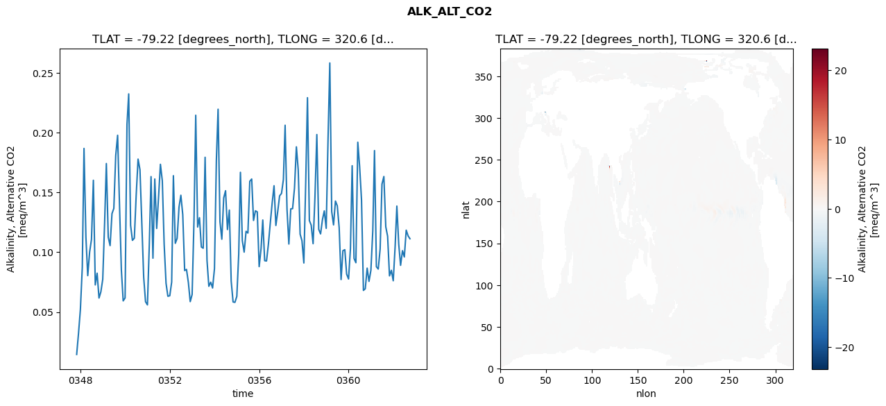
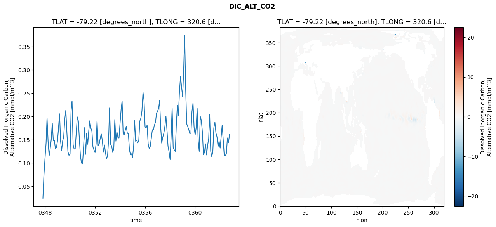
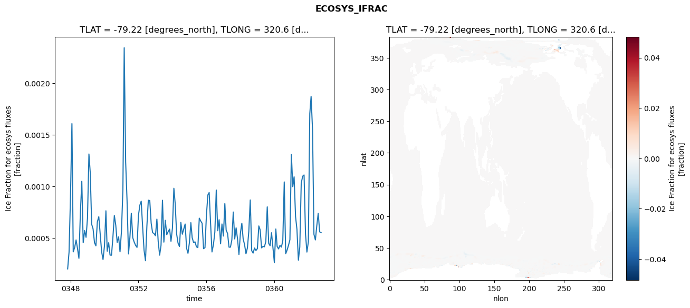
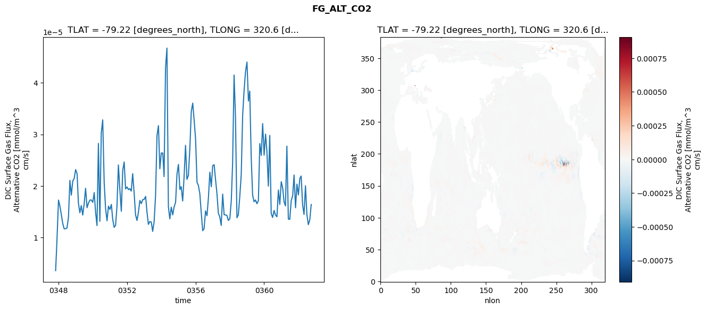

glb-dor_North_Atlantic_basin_022_1999-10-01_00091#
Simulation details#
Case: smyle.cdr-atlas-v0.glb-dor_North_Atlantic_basin_022_1999-10-01_00091.001
Basin: North_Atlantic_basin
Polygon: 22.0
Start date: 1999-10
Show code cell source Hide code cell source
import xarray as xr
import matplotlib.pyplot as plt
Show code cell source Hide code cell source
zarr_store = "/path/to/zarr/store"
# Parameters
zarr_store = "/global/cfs/projectdirs/m4746/Projects/Ocean-CDR-Atlas-v0/data/validation/smyle.cdr-atlas-v0.glb-dor_North_Atlantic_basin_022_1999-10-01_00091.001.validation.zarr"
Show code cell source Hide code cell source
%%time
ds_o = xr.open_zarr(zarr_store).compute()
ds_o
CPU times: user 677 ms, sys: 434 ms, total: 1.11 s
Wall time: 1.42 s
<xarray.Dataset> Size: 2MB
Dimensions: (nlat: 384, nlon: 320, time: 180)
Coordinates:
TLAT float64 8B -79.22
TLONG float64 8B 320.6
ULAT float64 8B -78.95
ULONG float64 8B 321.1
* time (time) object 1kB 0347-11-01 00:00:00 ... 0362-10-01 0...
z_t float32 4B 500.0
Dimensions without coordinates: nlat, nlon
Data variables:
ALK_ALT_CO2_diff (nlat, nlon) float32 492kB nan nan nan ... nan nan nan
ALK_ALT_CO2_rmse (time) float64 1kB 0.0145 0.03198 ... 0.1136 0.1113
DIC_ALT_CO2_diff (nlat, nlon) float32 492kB nan nan nan ... nan nan nan
DIC_ALT_CO2_rmse (time) float64 1kB 0.02469 0.07558 ... 0.1444 0.1613
ECOSYS_IFRAC_diff (nlat, nlon) float32 492kB nan nan nan ... nan nan nan
ECOSYS_IFRAC_rmse (time) float64 1kB 0.0002019 0.0003645 ... 0.0005529
FG_ALT_CO2_diff (nlat, nlon) float32 492kB nan nan nan ... nan nan nan
FG_ALT_CO2_rmse (time) float64 1kB 3.586e-06 9.869e-06 ... 1.641e-05xarray.Dataset
- nlat: 384
- nlon: 320
- time: 180
- TLAT()float64-79.22
- long_name :
- array of t-grid latitudes
- units :
- degrees_north
array(-79.22052261)
- TLONG()float64320.6
- long_name :
- array of t-grid longitudes
- units :
- degrees_east
array(320.56250892)
- ULAT()float64-78.95
- long_name :
- array of u-grid latitudes
- units :
- degrees_north
array(-78.95289509)
- ULONG()float64321.1
- long_name :
- array of u-grid longitudes
- units :
- degrees_east
array(321.12500894)
- time(time)object0347-11-01 00:00:00 ... 0362-10-...
- bounds :
- time_bound
- long_name :
- time
array([cftime.DatetimeNoLeap(347, 11, 1, 0, 0, 0, 0, has_year_zero=True), cftime.DatetimeNoLeap(347, 12, 1, 0, 0, 0, 0, has_year_zero=True), cftime.DatetimeNoLeap(348, 1, 1, 0, 0, 0, 0, has_year_zero=True), cftime.DatetimeNoLeap(348, 2, 1, 0, 0, 0, 0, has_year_zero=True), cftime.DatetimeNoLeap(348, 3, 1, 0, 0, 0, 0, has_year_zero=True), cftime.DatetimeNoLeap(348, 4, 1, 0, 0, 0, 0, has_year_zero=True), cftime.DatetimeNoLeap(348, 5, 1, 0, 0, 0, 0, has_year_zero=True), cftime.DatetimeNoLeap(348, 6, 1, 0, 0, 0, 0, has_year_zero=True), cftime.DatetimeNoLeap(348, 7, 1, 0, 0, 0, 0, has_year_zero=True), cftime.DatetimeNoLeap(348, 8, 1, 0, 0, 0, 0, has_year_zero=True), cftime.DatetimeNoLeap(348, 9, 1, 0, 0, 0, 0, has_year_zero=True), cftime.DatetimeNoLeap(348, 10, 1, 0, 0, 0, 0, has_year_zero=True), cftime.DatetimeNoLeap(348, 11, 1, 0, 0, 0, 0, has_year_zero=True), cftime.DatetimeNoLeap(348, 12, 1, 0, 0, 0, 0, has_year_zero=True), cftime.DatetimeNoLeap(349, 1, 1, 0, 0, 0, 0, has_year_zero=True), cftime.DatetimeNoLeap(349, 2, 1, 0, 0, 0, 0, has_year_zero=True), cftime.DatetimeNoLeap(349, 3, 1, 0, 0, 0, 0, has_year_zero=True), cftime.DatetimeNoLeap(349, 4, 1, 0, 0, 0, 0, has_year_zero=True), cftime.DatetimeNoLeap(349, 5, 1, 0, 0, 0, 0, has_year_zero=True), cftime.DatetimeNoLeap(349, 6, 1, 0, 0, 0, 0, has_year_zero=True), cftime.DatetimeNoLeap(349, 7, 1, 0, 0, 0, 0, has_year_zero=True), cftime.DatetimeNoLeap(349, 8, 1, 0, 0, 0, 0, has_year_zero=True), cftime.DatetimeNoLeap(349, 9, 1, 0, 0, 0, 0, has_year_zero=True), cftime.DatetimeNoLeap(349, 10, 1, 0, 0, 0, 0, has_year_zero=True), cftime.DatetimeNoLeap(349, 11, 1, 0, 0, 0, 0, has_year_zero=True), cftime.DatetimeNoLeap(349, 12, 1, 0, 0, 0, 0, has_year_zero=True), cftime.DatetimeNoLeap(350, 1, 1, 0, 0, 0, 0, has_year_zero=True), cftime.DatetimeNoLeap(350, 2, 1, 0, 0, 0, 0, has_year_zero=True), cftime.DatetimeNoLeap(350, 3, 1, 0, 0, 0, 0, has_year_zero=True), cftime.DatetimeNoLeap(350, 4, 1, 0, 0, 0, 0, has_year_zero=True), cftime.DatetimeNoLeap(350, 5, 1, 0, 0, 0, 0, has_year_zero=True), cftime.DatetimeNoLeap(350, 6, 1, 0, 0, 0, 0, has_year_zero=True), cftime.DatetimeNoLeap(350, 7, 1, 0, 0, 0, 0, has_year_zero=True), cftime.DatetimeNoLeap(350, 8, 1, 0, 0, 0, 0, has_year_zero=True), cftime.DatetimeNoLeap(350, 9, 1, 0, 0, 0, 0, has_year_zero=True), cftime.DatetimeNoLeap(350, 10, 1, 0, 0, 0, 0, has_year_zero=True), cftime.DatetimeNoLeap(350, 11, 1, 0, 0, 0, 0, has_year_zero=True), cftime.DatetimeNoLeap(350, 12, 1, 0, 0, 0, 0, has_year_zero=True), cftime.DatetimeNoLeap(351, 1, 1, 0, 0, 0, 0, has_year_zero=True), cftime.DatetimeNoLeap(351, 2, 1, 0, 0, 0, 0, has_year_zero=True), cftime.DatetimeNoLeap(351, 3, 1, 0, 0, 0, 0, has_year_zero=True), cftime.DatetimeNoLeap(351, 4, 1, 0, 0, 0, 0, has_year_zero=True), cftime.DatetimeNoLeap(351, 5, 1, 0, 0, 0, 0, has_year_zero=True), cftime.DatetimeNoLeap(351, 6, 1, 0, 0, 0, 0, has_year_zero=True), cftime.DatetimeNoLeap(351, 7, 1, 0, 0, 0, 0, has_year_zero=True), cftime.DatetimeNoLeap(351, 8, 1, 0, 0, 0, 0, has_year_zero=True), cftime.DatetimeNoLeap(351, 9, 1, 0, 0, 0, 0, has_year_zero=True), cftime.DatetimeNoLeap(351, 10, 1, 0, 0, 0, 0, has_year_zero=True), cftime.DatetimeNoLeap(351, 11, 1, 0, 0, 0, 0, has_year_zero=True), cftime.DatetimeNoLeap(351, 12, 1, 0, 0, 0, 0, has_year_zero=True), cftime.DatetimeNoLeap(352, 1, 1, 0, 0, 0, 0, has_year_zero=True), cftime.DatetimeNoLeap(352, 2, 1, 0, 0, 0, 0, has_year_zero=True), cftime.DatetimeNoLeap(352, 3, 1, 0, 0, 0, 0, has_year_zero=True), cftime.DatetimeNoLeap(352, 4, 1, 0, 0, 0, 0, has_year_zero=True), cftime.DatetimeNoLeap(352, 5, 1, 0, 0, 0, 0, has_year_zero=True), cftime.DatetimeNoLeap(352, 6, 1, 0, 0, 0, 0, has_year_zero=True), cftime.DatetimeNoLeap(352, 7, 1, 0, 0, 0, 0, has_year_zero=True), cftime.DatetimeNoLeap(352, 8, 1, 0, 0, 0, 0, has_year_zero=True), cftime.DatetimeNoLeap(352, 9, 1, 0, 0, 0, 0, has_year_zero=True), cftime.DatetimeNoLeap(352, 10, 1, 0, 0, 0, 0, has_year_zero=True), cftime.DatetimeNoLeap(352, 11, 1, 0, 0, 0, 0, has_year_zero=True), cftime.DatetimeNoLeap(352, 12, 1, 0, 0, 0, 0, has_year_zero=True), cftime.DatetimeNoLeap(353, 1, 1, 0, 0, 0, 0, has_year_zero=True), cftime.DatetimeNoLeap(353, 2, 1, 0, 0, 0, 0, has_year_zero=True), cftime.DatetimeNoLeap(353, 3, 1, 0, 0, 0, 0, has_year_zero=True), cftime.DatetimeNoLeap(353, 4, 1, 0, 0, 0, 0, has_year_zero=True), cftime.DatetimeNoLeap(353, 5, 1, 0, 0, 0, 0, has_year_zero=True), cftime.DatetimeNoLeap(353, 6, 1, 0, 0, 0, 0, has_year_zero=True), cftime.DatetimeNoLeap(353, 7, 1, 0, 0, 0, 0, has_year_zero=True), cftime.DatetimeNoLeap(353, 8, 1, 0, 0, 0, 0, has_year_zero=True), cftime.DatetimeNoLeap(353, 9, 1, 0, 0, 0, 0, has_year_zero=True), cftime.DatetimeNoLeap(353, 10, 1, 0, 0, 0, 0, has_year_zero=True), cftime.DatetimeNoLeap(353, 11, 1, 0, 0, 0, 0, has_year_zero=True), cftime.DatetimeNoLeap(353, 12, 1, 0, 0, 0, 0, has_year_zero=True), cftime.DatetimeNoLeap(354, 1, 1, 0, 0, 0, 0, has_year_zero=True), cftime.DatetimeNoLeap(354, 2, 1, 0, 0, 0, 0, has_year_zero=True), cftime.DatetimeNoLeap(354, 3, 1, 0, 0, 0, 0, has_year_zero=True), cftime.DatetimeNoLeap(354, 4, 1, 0, 0, 0, 0, has_year_zero=True), cftime.DatetimeNoLeap(354, 5, 1, 0, 0, 0, 0, has_year_zero=True), cftime.DatetimeNoLeap(354, 6, 1, 0, 0, 0, 0, has_year_zero=True), cftime.DatetimeNoLeap(354, 7, 1, 0, 0, 0, 0, has_year_zero=True), cftime.DatetimeNoLeap(354, 8, 1, 0, 0, 0, 0, has_year_zero=True), cftime.DatetimeNoLeap(354, 9, 1, 0, 0, 0, 0, has_year_zero=True), cftime.DatetimeNoLeap(354, 10, 1, 0, 0, 0, 0, has_year_zero=True), cftime.DatetimeNoLeap(354, 11, 1, 0, 0, 0, 0, has_year_zero=True), cftime.DatetimeNoLeap(354, 12, 1, 0, 0, 0, 0, has_year_zero=True), cftime.DatetimeNoLeap(355, 1, 1, 0, 0, 0, 0, has_year_zero=True), cftime.DatetimeNoLeap(355, 2, 1, 0, 0, 0, 0, has_year_zero=True), cftime.DatetimeNoLeap(355, 3, 1, 0, 0, 0, 0, has_year_zero=True), cftime.DatetimeNoLeap(355, 4, 1, 0, 0, 0, 0, has_year_zero=True), cftime.DatetimeNoLeap(355, 5, 1, 0, 0, 0, 0, has_year_zero=True), cftime.DatetimeNoLeap(355, 6, 1, 0, 0, 0, 0, has_year_zero=True), cftime.DatetimeNoLeap(355, 7, 1, 0, 0, 0, 0, has_year_zero=True), cftime.DatetimeNoLeap(355, 8, 1, 0, 0, 0, 0, has_year_zero=True), cftime.DatetimeNoLeap(355, 9, 1, 0, 0, 0, 0, has_year_zero=True), cftime.DatetimeNoLeap(355, 10, 1, 0, 0, 0, 0, has_year_zero=True), cftime.DatetimeNoLeap(355, 11, 1, 0, 0, 0, 0, has_year_zero=True), cftime.DatetimeNoLeap(355, 12, 1, 0, 0, 0, 0, has_year_zero=True), cftime.DatetimeNoLeap(356, 1, 1, 0, 0, 0, 0, has_year_zero=True), cftime.DatetimeNoLeap(356, 2, 1, 0, 0, 0, 0, has_year_zero=True), cftime.DatetimeNoLeap(356, 3, 1, 0, 0, 0, 0, has_year_zero=True), cftime.DatetimeNoLeap(356, 4, 1, 0, 0, 0, 0, has_year_zero=True), cftime.DatetimeNoLeap(356, 5, 1, 0, 0, 0, 0, has_year_zero=True), cftime.DatetimeNoLeap(356, 6, 1, 0, 0, 0, 0, has_year_zero=True), cftime.DatetimeNoLeap(356, 7, 1, 0, 0, 0, 0, has_year_zero=True), cftime.DatetimeNoLeap(356, 8, 1, 0, 0, 0, 0, has_year_zero=True), cftime.DatetimeNoLeap(356, 9, 1, 0, 0, 0, 0, has_year_zero=True), cftime.DatetimeNoLeap(356, 10, 1, 0, 0, 0, 0, has_year_zero=True), cftime.DatetimeNoLeap(356, 11, 1, 0, 0, 0, 0, has_year_zero=True), cftime.DatetimeNoLeap(356, 12, 1, 0, 0, 0, 0, has_year_zero=True), cftime.DatetimeNoLeap(357, 1, 1, 0, 0, 0, 0, has_year_zero=True), cftime.DatetimeNoLeap(357, 2, 1, 0, 0, 0, 0, has_year_zero=True), cftime.DatetimeNoLeap(357, 3, 1, 0, 0, 0, 0, has_year_zero=True), cftime.DatetimeNoLeap(357, 4, 1, 0, 0, 0, 0, has_year_zero=True), cftime.DatetimeNoLeap(357, 5, 1, 0, 0, 0, 0, has_year_zero=True), cftime.DatetimeNoLeap(357, 6, 1, 0, 0, 0, 0, has_year_zero=True), cftime.DatetimeNoLeap(357, 7, 1, 0, 0, 0, 0, has_year_zero=True), cftime.DatetimeNoLeap(357, 8, 1, 0, 0, 0, 0, has_year_zero=True), cftime.DatetimeNoLeap(357, 9, 1, 0, 0, 0, 0, has_year_zero=True), cftime.DatetimeNoLeap(357, 10, 1, 0, 0, 0, 0, has_year_zero=True), cftime.DatetimeNoLeap(357, 11, 1, 0, 0, 0, 0, has_year_zero=True), cftime.DatetimeNoLeap(357, 12, 1, 0, 0, 0, 0, has_year_zero=True), cftime.DatetimeNoLeap(358, 1, 1, 0, 0, 0, 0, has_year_zero=True), cftime.DatetimeNoLeap(358, 2, 1, 0, 0, 0, 0, has_year_zero=True), cftime.DatetimeNoLeap(358, 3, 1, 0, 0, 0, 0, has_year_zero=True), cftime.DatetimeNoLeap(358, 4, 1, 0, 0, 0, 0, has_year_zero=True), cftime.DatetimeNoLeap(358, 5, 1, 0, 0, 0, 0, has_year_zero=True), cftime.DatetimeNoLeap(358, 6, 1, 0, 0, 0, 0, has_year_zero=True), cftime.DatetimeNoLeap(358, 7, 1, 0, 0, 0, 0, has_year_zero=True), cftime.DatetimeNoLeap(358, 8, 1, 0, 0, 0, 0, has_year_zero=True), cftime.DatetimeNoLeap(358, 9, 1, 0, 0, 0, 0, has_year_zero=True), cftime.DatetimeNoLeap(358, 10, 1, 0, 0, 0, 0, has_year_zero=True), cftime.DatetimeNoLeap(358, 11, 1, 0, 0, 0, 0, has_year_zero=True), cftime.DatetimeNoLeap(358, 12, 1, 0, 0, 0, 0, has_year_zero=True), cftime.DatetimeNoLeap(359, 1, 1, 0, 0, 0, 0, has_year_zero=True), cftime.DatetimeNoLeap(359, 2, 1, 0, 0, 0, 0, has_year_zero=True), cftime.DatetimeNoLeap(359, 3, 1, 0, 0, 0, 0, has_year_zero=True), cftime.DatetimeNoLeap(359, 4, 1, 0, 0, 0, 0, has_year_zero=True), cftime.DatetimeNoLeap(359, 5, 1, 0, 0, 0, 0, has_year_zero=True), cftime.DatetimeNoLeap(359, 6, 1, 0, 0, 0, 0, has_year_zero=True), cftime.DatetimeNoLeap(359, 7, 1, 0, 0, 0, 0, has_year_zero=True), cftime.DatetimeNoLeap(359, 8, 1, 0, 0, 0, 0, has_year_zero=True), cftime.DatetimeNoLeap(359, 9, 1, 0, 0, 0, 0, has_year_zero=True), cftime.DatetimeNoLeap(359, 10, 1, 0, 0, 0, 0, has_year_zero=True), cftime.DatetimeNoLeap(359, 11, 1, 0, 0, 0, 0, has_year_zero=True), cftime.DatetimeNoLeap(359, 12, 1, 0, 0, 0, 0, has_year_zero=True), cftime.DatetimeNoLeap(360, 1, 1, 0, 0, 0, 0, has_year_zero=True), cftime.DatetimeNoLeap(360, 2, 1, 0, 0, 0, 0, has_year_zero=True), cftime.DatetimeNoLeap(360, 3, 1, 0, 0, 0, 0, has_year_zero=True), cftime.DatetimeNoLeap(360, 4, 1, 0, 0, 0, 0, has_year_zero=True), cftime.DatetimeNoLeap(360, 5, 1, 0, 0, 0, 0, has_year_zero=True), cftime.DatetimeNoLeap(360, 6, 1, 0, 0, 0, 0, has_year_zero=True), cftime.DatetimeNoLeap(360, 7, 1, 0, 0, 0, 0, has_year_zero=True), cftime.DatetimeNoLeap(360, 8, 1, 0, 0, 0, 0, has_year_zero=True), cftime.DatetimeNoLeap(360, 9, 1, 0, 0, 0, 0, has_year_zero=True), cftime.DatetimeNoLeap(360, 10, 1, 0, 0, 0, 0, has_year_zero=True), cftime.DatetimeNoLeap(360, 11, 1, 0, 0, 0, 0, has_year_zero=True), cftime.DatetimeNoLeap(360, 12, 1, 0, 0, 0, 0, has_year_zero=True), cftime.DatetimeNoLeap(361, 1, 1, 0, 0, 0, 0, has_year_zero=True), cftime.DatetimeNoLeap(361, 2, 1, 0, 0, 0, 0, has_year_zero=True), cftime.DatetimeNoLeap(361, 3, 1, 0, 0, 0, 0, has_year_zero=True), cftime.DatetimeNoLeap(361, 4, 1, 0, 0, 0, 0, has_year_zero=True), cftime.DatetimeNoLeap(361, 5, 1, 0, 0, 0, 0, has_year_zero=True), cftime.DatetimeNoLeap(361, 6, 1, 0, 0, 0, 0, has_year_zero=True), cftime.DatetimeNoLeap(361, 7, 1, 0, 0, 0, 0, has_year_zero=True), cftime.DatetimeNoLeap(361, 8, 1, 0, 0, 0, 0, has_year_zero=True), cftime.DatetimeNoLeap(361, 9, 1, 0, 0, 0, 0, has_year_zero=True), cftime.DatetimeNoLeap(361, 10, 1, 0, 0, 0, 0, has_year_zero=True), cftime.DatetimeNoLeap(361, 11, 1, 0, 0, 0, 0, has_year_zero=True), cftime.DatetimeNoLeap(361, 12, 1, 0, 0, 0, 0, has_year_zero=True), cftime.DatetimeNoLeap(362, 1, 1, 0, 0, 0, 0, has_year_zero=True), cftime.DatetimeNoLeap(362, 2, 1, 0, 0, 0, 0, has_year_zero=True), cftime.DatetimeNoLeap(362, 3, 1, 0, 0, 0, 0, has_year_zero=True), cftime.DatetimeNoLeap(362, 4, 1, 0, 0, 0, 0, has_year_zero=True), cftime.DatetimeNoLeap(362, 5, 1, 0, 0, 0, 0, has_year_zero=True), cftime.DatetimeNoLeap(362, 6, 1, 0, 0, 0, 0, has_year_zero=True), cftime.DatetimeNoLeap(362, 7, 1, 0, 0, 0, 0, has_year_zero=True), cftime.DatetimeNoLeap(362, 8, 1, 0, 0, 0, 0, has_year_zero=True), cftime.DatetimeNoLeap(362, 9, 1, 0, 0, 0, 0, has_year_zero=True), cftime.DatetimeNoLeap(362, 10, 1, 0, 0, 0, 0, has_year_zero=True)], dtype=object) - z_t()float32500.0
- long_name :
- depth from surface to midpoint of layer
- positive :
- down
- units :
- centimeters
- valid_max :
- 537500.0
- valid_min :
- 500.0
array(500., dtype=float32)
- ALK_ALT_CO2_diff(nlat, nlon)float32nan nan nan nan ... nan nan nan nan
- cell_methods :
- time: mean
- grid_loc :
- 3111
- long_name :
- Alkalinity, Alternative CO2
- units :
- meq/m^3
array([[ nan, nan, nan, ..., nan, nan, nan], [ nan, nan, nan, ..., nan, nan, nan], [0.17114258, 0.01391602, 0.00317383, ..., nan, nan, nan], ..., [ nan, nan, nan, ..., nan, nan, nan], [ nan, nan, nan, ..., nan, nan, nan], [ nan, nan, nan, ..., nan, nan, nan]], dtype=float32) - ALK_ALT_CO2_rmse(time)float640.0145 0.03198 ... 0.1136 0.1113
- cell_methods :
- time: mean
- grid_loc :
- 3111
- long_name :
- Alkalinity, Alternative CO2
- units :
- meq/m^3
array([0.01449937, 0.03197853, 0.05223823, 0.08745853, 0.18678962, 0.1127167 , 0.08041245, 0.10023194, 0.11070878, 0.16014821, 0.07265182, 0.08245214, 0.0616771 , 0.06680631, 0.07730398, 0.12510667, 0.17415563, 0.11257216, 0.10553259, 0.13228979, 0.13657807, 0.18077913, 0.19778276, 0.14117935, 0.08539198, 0.05928882, 0.06177713, 0.20682023, 0.23238097, 0.12247896, 0.10990817, 0.1117337 , 0.14731747, 0.17784 , 0.16896781, 0.12400622, 0.07893377, 0.05860138, 0.05594718, 0.10711226, 0.16321069, 0.09497358, 0.16123123, 0.11987783, 0.14548221, 0.17350828, 0.15972366, 0.10680709, 0.07401475, 0.06316775, 0.06360066, 0.07510539, 0.16397036, 0.10742628, 0.1116015 , 0.13777134, 0.14761824, 0.13140531, 0.0846666 , 0.08559573, 0.07455151, 0.05865904, 0.064631 , 0.12782858, 0.21453165, 0.12105866, 0.12883719, 0.10434212, 0.10335953, 0.179372 , 0.09318195, 0.07148977, 0.07492253, 0.07007253, 0.08629981, 0.17678701, 0.21956021, 0.1254113 , 0.11088154, 0.1454394 , 0.15141213, 0.11894107, 0.13522355, 0.07583515, 0.05837937, 0.05806453, 0.06307452, 0.09811209, 0.16681443, 0.10963215, 0.10008416, 0.11747564, 0.11604489, 0.15930279, 0.16121094, 0.12656178, 0.13459975, 0.13374093, 0.08795688, 0.10311136, 0.12692903, 0.09290151, 0.09266157, 0.1067609 , 0.12401638, 0.14090593, 0.15557288, 0.12236998, 0.1343998 , 0.14716444, 0.14916546, 0.16082748, 0.20616759, 0.13573466, 0.10683309, 0.13624799, 0.13643419, 0.15351529, 0.18811045, 0.16875659, 0.11508951, 0.10961854, 0.09099219, 0.15959176, 0.22921553, 0.12652116, 0.12259781, 0.10713667, 0.14566895, 0.19838331, 0.11910132, 0.11531641, 0.12735074, 0.13454901, 0.11995728, 0.19683779, 0.25825392, 0.13393975, 0.12284619, 0.14278391, 0.13876887, 0.12038409, 0.07714233, 0.10126131, 0.10210846, 0.08165185, 0.07761158, 0.10306501, 0.1723216 , 0.09478807, 0.09121555, 0.19196612, 0.17160877, 0.1435293 , 0.06805996, 0.0694344 , 0.08666674, 0.07561757, 0.08489681, 0.11796284, 0.18498062, 0.08786538, 0.08590219, 0.10271457, 0.15696255, 0.16329341, 0.12124747, 0.11339812, 0.08019531, 0.08487517, 0.07614197, 0.10491963, 0.13857794, 0.10655538, 0.08903374, 0.10126888, 0.09601464, 0.11844148, 0.11361098, 0.11127052]) - DIC_ALT_CO2_diff(nlat, nlon)float32nan nan nan nan ... nan nan nan nan
- cell_methods :
- time: mean
- grid_loc :
- 3111
- long_name :
- Dissolved Inorganic Carbon, Alternative CO2
- units :
- mmol/m^3
array([[ nan, nan, nan, ..., nan, nan, nan], [ nan, nan, nan, ..., nan, nan, nan], [ 0.15112305, 0.01538086, -0.00366211, ..., nan, nan, nan], ..., [ nan, nan, nan, ..., nan, nan, nan], [ nan, nan, nan, ..., nan, nan, nan], [ nan, nan, nan, ..., nan, nan, nan]], dtype=float32) - DIC_ALT_CO2_rmse(time)float640.02469 0.07558 ... 0.1444 0.1613
- cell_methods :
- time: mean
- grid_loc :
- 3111
- long_name :
- Dissolved Inorganic Carbon, Alternative CO2
- units :
- mmol/m^3
array([0.02468595, 0.07557855, 0.1104358 , 0.14299646, 0.19670091, 0.14618222, 0.11545375, 0.13116754, 0.15003559, 0.18615486, 0.14777821, 0.14876357, 0.13072405, 0.13366477, 0.14815054, 0.17717674, 0.20582911, 0.1466425 , 0.12759301, 0.14790825, 0.15713743, 0.19487047, 0.21346592, 0.16616884, 0.1245768 , 0.11675265, 0.11899821, 0.21277238, 0.23374269, 0.14004595, 0.13016912, 0.13112602, 0.16425922, 0.19912211, 0.19055128, 0.15071867, 0.11468056, 0.10017235, 0.09857532, 0.13508489, 0.17598569, 0.11901704, 0.16444586, 0.14052118, 0.16920827, 0.19096861, 0.17496527, 0.1692699 , 0.13436808, 0.12849945, 0.12273565, 0.14162796, 0.19007375, 0.13804692, 0.14062 , 0.15309307, 0.16248127, 0.14918317, 0.12335586, 0.13908663, 0.12318532, 0.10896061, 0.11609709, 0.15047053, 0.21839733, 0.14038784, 0.13669407, 0.12294252, 0.13127144, 0.19364912, 0.14712995, 0.16736747, 0.154753 , 0.15393096, 0.18597002, 0.2154009 , 0.23334438, 0.16298253, 0.16063227, 0.17070518, 0.17827651, 0.16447337, 0.16281699, 0.1288813 , 0.11772748, 0.11992816, 0.11269377, 0.13629363, 0.19112677, 0.14685089, 0.14922695, 0.14350517, 0.14841767, 0.19039252, 0.19688512, 0.2119683 , 0.25211233, 0.23475479, 0.17746318, 0.17593628, 0.18134644, 0.14130515, 0.13128903, 0.13589621, 0.15303214, 0.17143675, 0.17172621, 0.1816655 , 0.18831678, 0.20738983, 0.21181484, 0.21718838, 0.23499393, 0.17712999, 0.14293893, 0.15558627, 0.16391329, 0.17811498, 0.20096627, 0.1715623 , 0.13636381, 0.12461104, 0.10768763, 0.16016915, 0.21748695, 0.13355712, 0.12852532, 0.12529408, 0.18121516, 0.22420252, 0.20278285, 0.25370807, 0.28541567, 0.26434008, 0.24244313, 0.30028099, 0.37472524, 0.25827616, 0.18417517, 0.17782154, 0.17174046, 0.16307456, 0.16487446, 0.21062539, 0.22917743, 0.1776215 , 0.16038807, 0.17610366, 0.21731723, 0.14732459, 0.12524041, 0.20011566, 0.19194629, 0.16655155, 0.11790934, 0.12316541, 0.14133396, 0.11754505, 0.13820066, 0.1532418 , 0.20459777, 0.12557096, 0.11408661, 0.12435427, 0.17530052, 0.18762355, 0.164336 , 0.15632666, 0.13567423, 0.14718938, 0.13220915, 0.15816441, 0.18108709, 0.1496435 , 0.11566639, 0.1165155 , 0.11944464, 0.15396098, 0.14436471, 0.161259 ]) - ECOSYS_IFRAC_diff(nlat, nlon)float32nan nan nan nan ... nan nan nan nan
- cell_methods :
- time: mean
- grid_loc :
- 2110
- long_name :
- Ice Fraction for ecosys fluxes
- units :
- fraction
array([[ nan, nan, nan, ..., nan, nan, nan], [ nan, nan, nan, ..., nan, nan, nan], [-4.7683716e-07, 3.3378601e-06, 3.7550926e-06, ..., nan, nan, nan], ..., [ nan, nan, nan, ..., nan, nan, nan], [ nan, nan, nan, ..., nan, nan, nan], [ nan, nan, nan, ..., nan, nan, nan]], dtype=float32) - ECOSYS_IFRAC_rmse(time)float640.0002019 0.0003645 ... 0.0005529
- cell_methods :
- time: mean
- grid_loc :
- 2110
- long_name :
- Ice Fraction for ecosys fluxes
- units :
- fraction
array([0.00020187, 0.00036447, 0.00090247, 0.00160718, 0.00036646, 0.00041038, 0.00048221, 0.00039848, 0.00030405, 0.00073857, 0.0010492 , 0.00045465, 0.00057259, 0.00050761, 0.00069165, 0.00131359, 0.00113479, 0.00063366, 0.00058906, 0.00045464, 0.00042485, 0.0006573 , 0.00070688, 0.00053986, 0.00036718, 0.00029274, 0.00042571, 0.000764 , 0.00037326, 0.00045481, 0.0003354 , 0.00033419, 0.00050622, 0.0007187 , 0.00062285, 0.00045776, 0.00051157, 0.00036667, 0.00056494, 0.00097062, 0.0023413 , 0.00123547, 0.00086383, 0.00034644, 0.00050505, 0.00074069, 0.00050358, 0.00046172, 0.00042951, 0.00040995, 0.00072006, 0.00081953, 0.00085688, 0.00060718, 0.00038462, 0.00028079, 0.00061405, 0.00086666, 0.00086265, 0.00064436, 0.00055216, 0.00054428, 0.0005224 , 0.00068355, 0.00046788, 0.0003348 , 0.00042953, 0.00086605, 0.00046086, 0.0006716 , 0.00053257, 0.00056219, 0.00058684, 0.00046874, 0.00059582, 0.000982 , 0.0008341 , 0.0005407 , 0.00045188, 0.0004184 , 0.00065122, 0.00053742, 0.00058723, 0.00063584, 0.00040256, 0.00035281, 0.00045755, 0.00064893, 0.00050397, 0.00045598, 0.00046381, 0.00041498, 0.00040799, 0.00069283, 0.00066488, 0.00064268, 0.00039746, 0.00040701, 0.00072006, 0.00091688, 0.00094062, 0.0006358 , 0.0003658 , 0.000437 , 0.00055711, 0.00096499, 0.0005709 , 0.00067764, 0.00044415, 0.00063652, 0.00051968, 0.0008335 , 0.0005772 , 0.00054364, 0.0004124 , 0.00041199, 0.00048096, 0.0007521 , 0.00049164, 0.00059905, 0.00048993, 0.00034128, 0.00054734, 0.00064345, 0.0004937 , 0.0004353 , 0.00034787, 0.00040527, 0.00056576, 0.00086873, 0.00037777, 0.00035465, 0.00040371, 0.00037969, 0.00039799, 0.00061756, 0.00058012, 0.00040512, 0.00042 , 0.00041551, 0.0004657 , 0.00080215, 0.00044901, 0.00042574, 0.0005514 , 0.00040671, 0.00026122, 0.00058774, 0.00041961, 0.00039541, 0.00042963, 0.00041271, 0.00047457, 0.00104352, 0.00034791, 0.00038336, 0.00043073, 0.00048419, 0.0013103 , 0.00099692, 0.00109267, 0.00070786, 0.00058391, 0.00028635, 0.00041358, 0.00103077, 0.00109842, 0.00111062, 0.000538 , 0.00036469, 0.00046364, 0.00170439, 0.00187014, 0.00154558, 0.00053694, 0.00048198, 0.00061782, 0.00073954, 0.00056009, 0.00055294]) - FG_ALT_CO2_diff(nlat, nlon)float32nan nan nan nan ... nan nan nan nan
- cell_methods :
- time: mean
- grid_loc :
- 2110
- long_name :
- DIC Surface Gas Flux, Alternative CO2
- units :
- mmol/m^3 cm/s
array([[ nan, nan, nan, ..., nan, nan, nan], [ nan, nan, nan, ..., nan, nan, nan], [-1.4279351e-09, 4.4136073e-09, 2.7039038e-09, ..., nan, nan, nan], ..., [ nan, nan, nan, ..., nan, nan, nan], [ nan, nan, nan, ..., nan, nan, nan], [ nan, nan, nan, ..., nan, nan, nan]], dtype=float32) - FG_ALT_CO2_rmse(time)float643.586e-06 9.869e-06 ... 1.641e-05
- cell_methods :
- time: mean
- grid_loc :
- 2110
- long_name :
- DIC Surface Gas Flux, Alternative CO2
- units :
- mmol/m^3 cm/s
array([3.58633697e-06, 9.86918264e-06, 1.72714157e-05, 1.60398858e-05, 1.45230325e-05, 1.27562254e-05, 1.17058272e-05, 1.17117563e-05, 1.18480386e-05, 1.39301625e-05, 2.10866595e-05, 1.82277008e-05, 2.09769123e-05, 2.14646631e-05, 2.31793351e-05, 2.23988707e-05, 1.66908989e-05, 1.48129102e-05, 1.61983323e-05, 1.43652170e-05, 1.64705778e-05, 1.95522649e-05, 1.57903434e-05, 1.66759807e-05, 1.72604344e-05, 1.72929675e-05, 1.68233055e-05, 1.87208262e-05, 1.50037920e-05, 1.23252339e-05, 2.82548776e-05, 1.31493411e-05, 3.02422280e-05, 3.28246172e-05, 2.06686225e-05, 1.55767095e-05, 1.32591348e-05, 1.60902092e-05, 1.54421368e-05, 1.64295893e-05, 1.36020648e-05, 1.19802512e-05, 1.23387370e-05, 1.60929045e-05, 2.40738106e-05, 1.92993108e-05, 1.50945813e-05, 2.30592666e-05, 2.46439822e-05, 1.94344564e-05, 1.98001838e-05, 1.92905693e-05, 1.94840131e-05, 1.90026253e-05, 2.23841194e-05, 1.86835546e-05, 1.44054163e-05, 1.33109668e-05, 1.49302144e-05, 1.71919580e-05, 1.65879535e-05, 1.73602031e-05, 1.73965470e-05, 1.79806021e-05, 1.50263455e-05, 1.25468702e-05, 1.31104953e-05, 1.30073000e-05, 1.12006498e-05, 1.30891762e-05, 1.82341426e-05, 2.97687396e-05, 3.16964384e-05, 2.33365435e-05, 2.63847977e-05, 2.64071677e-05, 2.18126373e-05, 4.29203502e-05, 4.67355049e-05, 1.59765754e-05, ... 2.01312756e-05, 1.85589313e-05, 1.49202432e-05, 1.13359898e-05, 1.17048239e-05, 1.51713770e-05, 1.42415662e-05, 1.76372199e-05, 2.26851745e-05, 1.98606317e-05, 2.39339575e-05, 2.41173957e-05, 2.13445175e-05, 1.85828857e-05, 1.47282811e-05, 1.39860499e-05, 1.23493599e-05, 1.84271469e-05, 1.44240249e-05, 1.43969775e-05, 1.42760736e-05, 1.33043090e-05, 1.36756131e-05, 1.72499601e-05, 2.44343755e-05, 4.15127399e-05, 3.33771924e-05, 1.38381125e-05, 1.44157373e-05, 1.79798905e-05, 2.23157060e-05, 3.37572269e-05, 3.86024197e-05, 4.21487643e-05, 4.40239224e-05, 3.64637337e-05, 3.83986944e-05, 2.55280768e-05, 1.82214425e-05, 1.69420188e-05, 1.72941835e-05, 1.65619401e-05, 1.71418734e-05, 2.82224722e-05, 2.59417893e-05, 3.20882234e-05, 2.59845767e-05, 3.00561285e-05, 2.67949003e-05, 1.99765119e-05, 2.98012499e-05, 1.46495385e-05, 1.38990675e-05, 1.52589996e-05, 1.43739824e-05, 1.40301755e-05, 1.92180631e-05, 1.64215912e-05, 2.08360926e-05, 1.95797753e-05, 1.69622497e-05, 1.61347455e-05, 2.77265523e-05, 1.35973792e-05, 1.35196935e-05, 1.71593192e-05, 1.80945019e-05, 2.21320392e-05, 1.57738437e-05, 2.03624277e-05, 1.82659918e-05, 2.14921196e-05, 2.19311268e-05, 1.63252985e-05, 1.44820942e-05, 2.00367776e-05, 1.44828337e-05, 1.24970894e-05, 1.34412008e-05, 1.64144538e-05])
- timePandasIndex
PandasIndex(CFTimeIndex([0347-11-01 00:00:00, 0347-12-01 00:00:00, 0348-01-01 00:00:00, 0348-02-01 00:00:00, 0348-03-01 00:00:00, 0348-04-01 00:00:00, 0348-05-01 00:00:00, 0348-06-01 00:00:00, 0348-07-01 00:00:00, 0348-08-01 00:00:00, ... 0362-01-01 00:00:00, 0362-02-01 00:00:00, 0362-03-01 00:00:00, 0362-04-01 00:00:00, 0362-05-01 00:00:00, 0362-06-01 00:00:00, 0362-07-01 00:00:00, 0362-08-01 00:00:00, 0362-09-01 00:00:00, 0362-10-01 00:00:00], dtype='object', length=180, calendar='noleap', freq='MS'))
Show code cell source Hide code cell source
variables = [v[:-5] for v in ds_o.variables if "_rmse" in v]
Show code cell source Hide code cell source
plt.rcParams.update({'figure.max_open_warning': 0})
for v in variables:
fig, axs = plt.subplots(1, 2, figsize=(15, 6))
ds_o[f"{v}_rmse"].plot(ax=axs[0])
ds_o[f"{v}_diff"].plot(ax=axs[1])
plt.suptitle(v, fontweight="bold")



